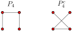
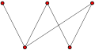
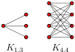

Definition1.1.3
A graph \(G\) consists of a set \(V(G)\text{,}\) called the vertices of \(G\text{,}\) and a set \(E(G)\text{,}\) called the edges of \(G\text{,}\) of the two element subsets of \(V(G)\)
First and foremost, you should think of a graph as a certain type of picture, containing dots and lines connecting those dots, like so:
We will typically use the letters \(G, H\text{,}\) or \(\Gamma\) (capital Gamma) to denote a graph. The “dots” or the graph are called vertices or nodes, and the lines between the dots are called edges. Graphs occur frequently in the “real world”, and typically how to show how something is connected, with the vertices representing the things and the edges showing connections.
That is all rather informal, though, and to do mathematics we need very precise, formal definitions. We now provide that.
The formal definition of a graph that we will use is the following:
A graph \(G\) consists of a set \(V(G)\text{,}\) called the vertices of \(G\text{,}\) and a set \(E(G)\text{,}\) called the edges of \(G\text{,}\) of the two element subsets of \(V(G)\)
Consider the water molecule, which consists of a single oxygen atom, connected to two hydrogen atoms. It has three vertices, and so \(V(G)=\{O, H1, H2\}\text{,}\) and two edges \(E(G)=\big\{\{O, H1\},\{O,H2\}\big\}\)
This formal definition has some perhaps unintended consequences about what a graph is. Because we have identified edges with the two things they connect, and have a set of edges, we can't have more than one edge between any two vertices. In many real world examples, this is not the case: for example, on the London Tube, the Circle, District and Picadilly lines all connect Gloucester Road with South Kensington, and so there should be multiple edges between those two vertices on the graph. As another example, in organic chemistry, there are often "double bonds", instead of just one.
Another consequence is that we require each edge to be a two element subset of \(V(G)\text{,}\) and so we do not allow for the possibility of an edge between a vertex and itself, often called a loop.
Graphs without multiple edges or loops are sometimes called simple graphs. We will sometimes deal with graphs with multiple edges or loops, and will try to be explicit when we allow this. Our default assumption is that our graphs are simple.
Another consequence of the definition is that edges are symmetric, and work equally well in both directions. This is not always the case: in road systems, there are often one-way streets. If we were to model Twitter or Instragram as a graph, rather than the symmetric notion of friends we would have to work with “following”. To capture these, we have the notion of a directed graph, where rather than just lines, we think of the edges as arrows, pointing from one vertex (the source) to another vertex (the target). To model Twitter or Instagram, we would have an ege from vertex \(a\) to vertex \(b\) if \(a\) followed \(b\text{.}\)
Several simple graphs that are frequently referenced have specific names.
The complete graph \(K_n\) is the graph on \(n\) vertices, with an edge between any two distinct vertices.
The empty graph \(E_n\) is the graph on \(n\) vertices, with no edges.
The path graph \(P_n\) is the graph on \(n\) vertices \(\{v_1,\dots, v_n\}\) with edges \(\{ \{v_1, v_2\}, \{v_2,v_3\},\dots,\{v_{n-1},v_n\}\}\text{.}\)
The cycle graph \(C_n\) is the graph on \(n\) vertices \(\{v_1,\dots, v_n\}\) with edges \(\{ \{v_1, v_2\}, \{v_2,v_3\},\dots,\{v_{n-1},v_n\}, \{v_n, v_1\}\}\text{.}\)
The complelement of a simple graph \(G\text{,}\) which we will denote \(G^c\text{,}\) and is sometimes written \(\overline{G}\text{,}\) is the graph with the same vertex set as \(G\text{,}\) but \(\{v,w\}\in E(G^c)\) if and only if \(\{v,w\}\notin E(G)\text{;}\) that is, there is an edge between \(v\) and \(w\) in \(G^c\) if and only if there is not an edge between \(v\) and \(w\) in \(G\)
The empty graph and complete graph are complements of each other; \(K_n^c=E_n\)
The path graph \(P_4\) and its complement are shown below:
It commonly occurs that there are two different types of vertices, and the edges only go between vertices of the two types. For example, we may be modelling a company, and one type of vertices may represent the employees, and another type of vertices could represent the different jobs that need done, with an edge between a worker and a job if the worker is qualified to do that particular job. We call these graphs bipartite.
A graph \(\bfG\) is bipartite if its vertices can be coloured red and blue so that every edge goes between a red vertex and a blue vertex.
The graph below is bipartite.
As another example, note that the cycle graph \(C_4\) is bipartite -- we can colour vertices 1 and 3 red, and vertices 2 and 4 blue. But the cycle graph \(C_3\) is not bipartite: as the two colours are interchangable, we can assume we coloured vertex 1 red; then since it is adjacent to both 2 and 3, those vertices must both be blue, but they're adjacent to each other, which violates the definition of bipartite. More generally, we have:
The cycle graph \(C_n\) is bipartite if and only if n is even.
Let's try to colour the vertices of \(C_n\) red and blue so that adjacent vertices have different colour. Without loss of generality, we may assume that \(v_1\) is coloured blue. Then since it is adjacent to \(v_1, v_2\) must be coloured red. Continuing in this way, we see that \(v_k\) is blue for odd \(k\) and red for even \(k\text{.}\) But \(v_n\) is adjacent to \(v_1\text{,}\) and so these will have different colours precisely when \(n\) is even.
A graph \(\bfG\) is bipartite if and only if \(\bfG\) has no subgraphs that are isomorphic to \(C_{2k+1}\)
First, note that if \(\bfG_2\) is a subgraph of \(\bfG_1\text{,}\) and \(\bfG_1\) is bipartite, then so is \(\bfG_2\text{:}\) colouring the vertices of \(\bfG_1\) red and blue in particular colours the vertices of \(\bfG_2\) as well. Hence, we see if that \(\bfG\) has a subgraph isomorphic to \(C_{2k_1}\text{,}\) which isn't bipartite by the previous lemma, then \(\bfG_1\) can't be bipartite, either.
In the other direction, we assume that \(\bfG\) has no subgraphs isomorphic to \(C_{2k+1}\text{;}\) we need to prove that \(\bfG\) is bipartite. Again, let's try to colour the vertices of \(\bfG\) red and blue so that adjancent vertices have different colours. Choose a vertex \(v\) of \(\bfG\text{,}\) without loss of generality we may assume that \(v\) is coloured blue; then all vertices adjacent to \(v\) -- i.e., those vertices at distance 1 from \(v\) -- are coloured red. The vertices adjacent to those must be blue, and the ones adjacent to those must be red, alternating out. This suggests trying to colour all vertices at odd distance from \(v\) red, and those vertices at even distance from \(v\) blue. We will show that if this colouring has two vertices of the same colour that are adjacent, then \(\bfG\) has an odd cycle.
Assume that \(u\) and \(w\) are two vertices coloured red that are adjacent. Since \(u\) is red, the distance from \(v\) to \(u\) is odd -- there is a path \(v=v_0 - v_1 - \cdots - v_{2k+1}=u\text{.}\) Similarly, there is an odd length path from \(v\) to \(w\text{:}\) \(v=w_0 - w_1 - \cdots - w_{2\ell+1}=w\text{.}\) Taking the union of these two subgraphs and the edge connecting \(u\) and \(w\text{,}\) we get a closed walk consisting of \((2k+1)+(2\ell+1)+1=2k+2\ell+3\) edges, which is odd. This walk may repeat some vertices and edges, but if it does we can split it into two smaller walks, one of which must have odd length, and eventually we must get a closed walk of odd length that doesn't repeat any vertices.
The case that \(u\) and \(w\) are both coloured blue is completely analogous, except we will be merging two paths with an even number of edges and one extra edge to get a path with odd length.
A special type of bipartite graph is the complete bipartite graphs \(K_{m,n}\text{,}\) which are the simple graphs that have as many edges as possible while still being bipartite.
The complete bipartite graph \(K_{m,n}\) is the graph with \(m\) red vertices and \(n\) blue vertices, and an edge between very red vertex and every blue vertex.
The complete bipartite graph \(K_{2,2}\) is isomorphic to \(C_4\text{.}\)
The graphs \(K_{1,3}\) and \(K_{4,4}\) are drawn below.
